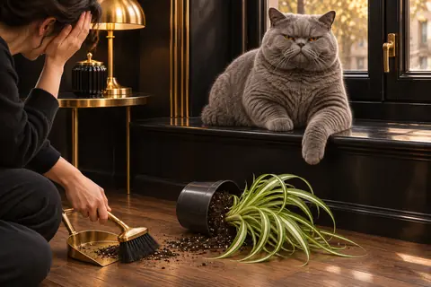

Koci Notatnik / Kocie opowieści
Remont pod nadzorem · 4 min czytaniaDlaczego zrzucam kwiaty z parapetu? Ktoś zasłonił mi telewizję.
Kochani, człowiek postawił kwiaty na moim parapecie. W samym środku transmisji z karmnika. Przysunąłem łapę, poprawiłem widoczność i nagle wszyscy zaczęli mówić podniesionym głosem. Trudno tu prowadzić remont.

Dlaczego kot zrzuca kwiaty z parapetu?
Doniczka może zostać potrącona podczas przechodzenia, badania przedmiotów lub zabawy. Nuda i reakcje człowieka też mogą sprzyjać strącaniu rzeczy. Zabezpiecz rośliny i zostaw kotu bezpieczne miejsce do obserwowania otoczenia.
Sam wybrałem tego człowieka. Miał kanapę, puszki i okno z widokiem na ptaki. Ostatni punkt był kluczowy. Nie po to przeprowadzałem się do apartamentu, żeby oglądać spód doniczki.
Parapet był mój. Potem otworzył się na nim ogród botaniczny.
Najpierw pojawił się jeden kwiatek. Dobrze, pomyślałem. Stażysta od fotosyntezy. Potem drugi. Potem trzeci. Człowiek podlewał je i mówił „jak pięknie rośnie”. Mnie po dokładce mówi „musimy pilnować porcji”. W tym domu każdy gatunek ma inny dział kadr.
Wszedłem na parapet. Zieleń. Spojrzałem w lewo. Zieleń. W prawo też. Kochani, kupili mi pakiet przyrodniczy i wyłączyli wszystkie kanały poza liściem.
Dotknąłem doniczki.
— Zostaw kwiatka!
O! Personel zauważył zmianę w aranżacji. Szkoda, że dopiero moją.
Przesunąłem łapkę. Doniczka wykonała krótki lot krajowy. Lekka osłonka przetrwała. Ziemia skorzystała z możliwości pracy zdalnej i rozeszła się po podłodze.
Człowiek spojrzał na mnie. Ja na niego. On na ziemię. Ja przez okno. Każdy wrócił do swoich obowiązków.
Dlaczego kot zrzuca doniczki? Kilka możliwych powodów.
Kot może trącać przedmioty podczas badania otoczenia lub zabawy. Ruszające się liście bywają interesujące, a doniczka może też zostać potrącona podczas przechodzenia. Nuda i reakcje opiekuna mogą sprzyjać powtarzaniu strącania rzeczy. Nie każdy upadek jest celowy.
Okno zapewnia bodźce do obserwowania, więc warto zostawić kotu bezpieczny dostęp do widoku. Nasza opowieść o „odblokowaniu telewizji” jest żartem — z samego upadku doniczki nie odczytamy intencji kota.
Mój człowiek przykucnął ze zmiotką.
— Teraz jesteś zadowolony?
Nie od razu, kochany. Najpierw muszę sprawdzić odbiór obrazu. Gołąb właśnie wszedł w kadr.
Nowy podział mieszkania: widok dla kota, rośliny w bezpiecznym miejscu.
Człowiek przeniósł doniczki na stabilny stojak poza moim zasięgiem. Na parapecie zostawił szerokie miejsce. Okno było zamknięte. Zabawę zaproponował wcześniej, zanim rozpocząłem kolejne oględziny wyposażenia.
Znakomicie. Rośliny mają światło, ja mam program, a personel odzyskał podłogę w jednym kolorze.
— Wystarczyło poczekać, aż ci zrobię miejsce — powiedział.
Oczywiście. W moim kalendarzu między śniadaniem a drzemką była akurat wolna pozycja „czekanie, aż człowiek się domyśli”. Niestety, system jej nie przyjął.
Nie każdy kwiatek może mieszkać z kotem.
Sprawdź dokładny gatunek każdej rośliny. Zielistka Sternberga (Chlorophytum comosum), przedstawiona na ilustracji, jest uznawana przez ASPCA za nietoksyczną dla kotów. To nie znaczy, że kot powinien jeść roślinę, ziemię lub nawóz.
Lilie z rodzaju Lilium i liliowce Hemerocallis są dla kotów szczególnie niebezpieczne. Groźny może być także pyłek i kontakt z wodą z wazonu. Przy podejrzeniu kontaktu z lilią lub zjedzenia toksycznej rośliny dzwoń od razu do weterynarza — nie czekaj na objawy. Przygotuj nazwę albo zdjęcie rośliny; nie wywołuj wymiotów na własną rękę.
Wybór niewolnika był moją decyzją. Lista bezpiecznych roślin jest już jego pracą domową. I tym razem nie zaliczymy odpowiedzi „ale w sklepie było napisane, że ładna”.
Co ma zapamiętać Twój człowiek
- Zostaw szerokie miejsce do obserwacji przy zabezpieczonym oknie. Uchylne okno także wymaga ochrony przed zaklinowaniem.
- Przenieś doniczki poza zasięg kota i na stabilne podstawy. Samo zwiększenie ciężaru doniczki może zwiększyć skutki jej upadku.
- Sprawdź gatunki roślin; zabezpiecz nawozy i preparaty do pielęgnacji. Lilie trzymaj poza domem z kotem.
- Proponuj regularną zabawę i nagradzaj korzystanie z bezpiecznego miejsca. Nie strasz i nie karć kota.
- Po upadku odsuń kota, zbierz ziemię i ewentualne odłamki. Przy podejrzeniu zatrucia skontaktuj się pilnie z weterynarzem.